2022 National 5 Mathematics - Paper 1 marking instructions
Source: Scottish Qualifications Authority (SQA) / Qualifications Scotland. This is a StemInteract HTML companion, not an official HTML edition. Selectable text is supplied alongside original page images. Use the images or original PDF for equations, powers, fractions, vector notation, tables and diagrams; text extraction cannot fully preserve mathematical layout.
Jump to a question
PDF page 1
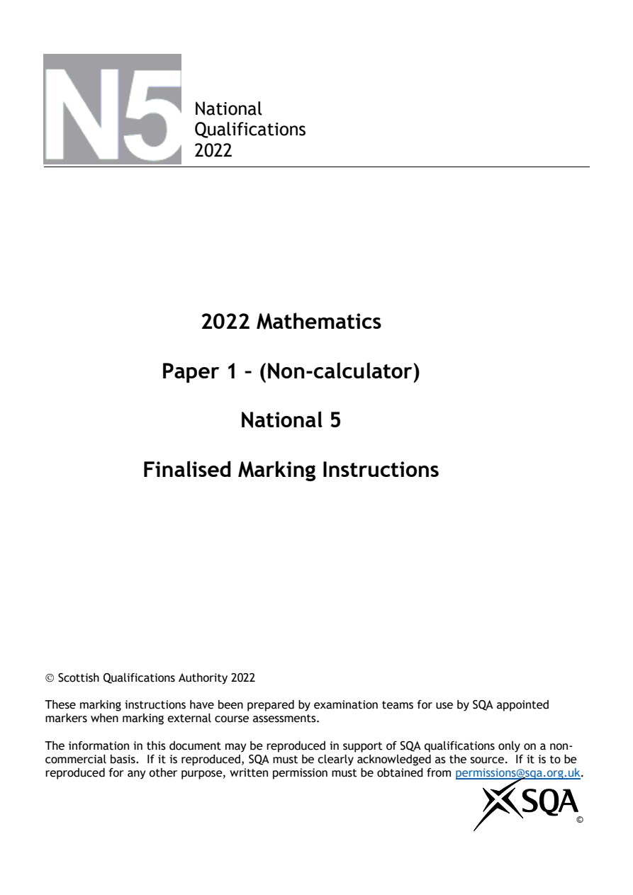
Selectable page text
National
Qualifications
2022
2022 Mathematics
Paper 1 – (Non-calculator)
National 5
Finalised Marking Instructions
© Scottish Qualifications Authority 2022
These marking instructions have been prepared by examination teams for use by SQA appointed
markers when marking external course assessments.
The information in this document may be reproduced in support of SQA qualifications only on a non-
commercial basis. If it is reproduced, SQA must be clearly acknowledged as the source. If it is to be
reproduced for any other purpose, written permission must be obtained from permissions@sqa.org.uk.
©PDF page 2
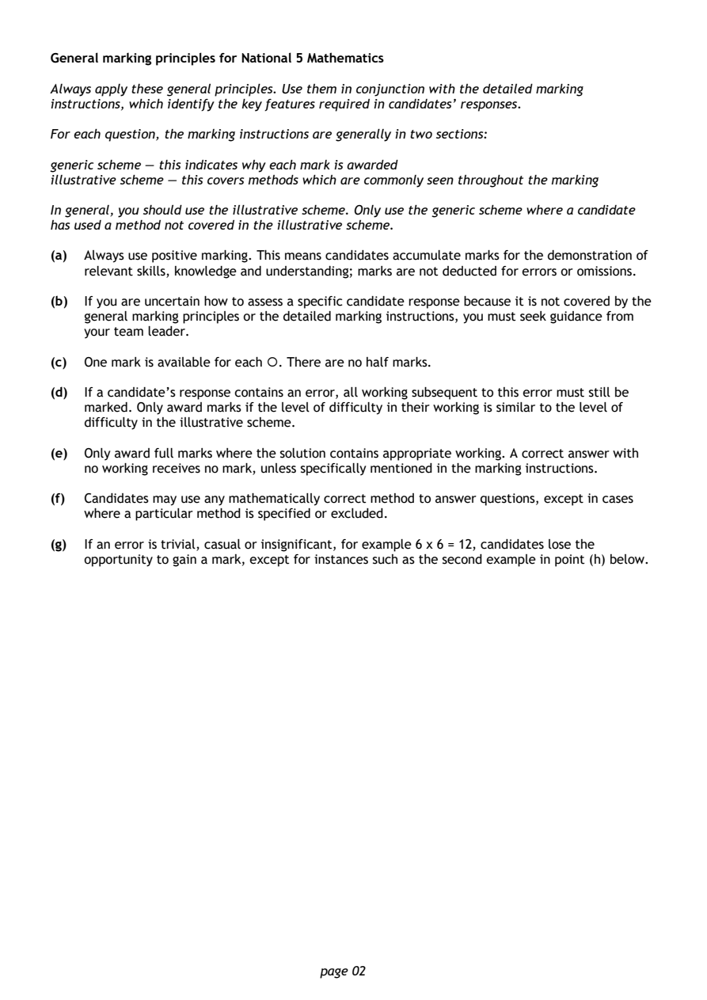
Selectable page text
General marking principles for National 5 Mathematics
Always apply these general principles. Use them in conjunction with the detailed marking
instructions, which identify the key features required in candidates’ responses.
For each question, the marking instructions are generally in two sections:
generic scheme — this indicates why each mark is awarded
illustrative scheme — this covers methods which are commonly seen throughout the marking
In general, you should use the illustrative scheme. Only use the generic scheme where a candidate
has used a method not covered in the illustrative scheme.
(a) Always use positive marking. This means candidates accumulate marks for the demonstration of
relevant skills, knowledge and understanding; marks are not deducted for errors or omissions.
(b) If you are uncertain how to assess a specific candidate response because it is not covered by the
general marking principles or the detailed marking instructions, you must seek guidance from
your team leader.
(c) One mark is available for each . There are no half marks.
(d) If a candidate’s response contains an error, all working subsequent to this error must still be
marked. Only award marks if the level of difficulty in their working is similar to the level of
difficulty in the illustrative scheme.
(e) Only award full marks where the solution contains appropriate working. A correct answer with
no working receives no mark, unless specifically mentioned in the marking instructions.
(f) Candidates may use any mathematically correct method to answer questions, except in cases
where a particular method is specified or excluded.
(g) If an error is trivial, casual or insignificant, for example 6 x 6 = 12, candidates lose the
opportunity to gain a mark, except for instances such as the second example in point (h) below.
page 02PDF page 3
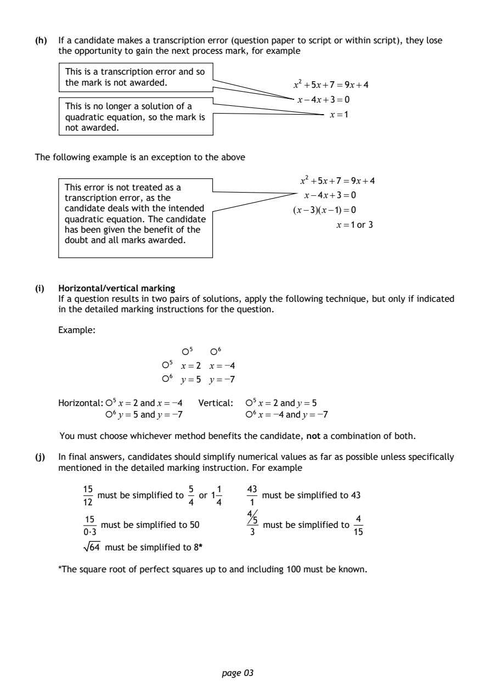
Selectable page text
(h) If a candidate makes a transcription error (question paper to script or within script), they lose
the opportunity to gain the next process mark, for example
This is a transcription error and so
the mark is not awarded. x² +5x+7 =9x+4
x−4x+3=0
This is no longer a solution of a
quadratic equation, so the mark is
x=1
not awarded.
The following example is an exception to the above
x² +5x+7 =9x+4
This error is not treated as a
x−4x+3=0
transcription error, as the
candidate deals with the intended (x−3)(x−1)=0
quadratic equation. The candidate
x=1 or 3
has been given the benefit of the
doubt and all marks awarded.
(i) Horizontal/vertical marking
If a question results in two pairs of solutions, apply the following technique, but only if indicated
in the detailed marking instructions for the question.
Example:
5 6
5 x = 2 x = −4
6 y = 5 y = −7
Horizontal: ⁵ x = 2 and x = −4 Vertical: 5 x = 2 and y = 5
6 y = 5 and y = −7 6 x = −4 and y = −7
You must choose whichever method benefits the candidate, not a combination of both.
(j) In final answers, candidates should simplify numerical values as far as possible unless specifically
mentioned in the detailed marking instruction. For example
15 5 1 43
must be simplified to or 1 must be simplified to 43
12 4 4 1
4
15 5 4
must be simplified to 50 must be simplified to
0·3 3 15
64 must be simplified to 8*
*The square root of perfect squares up to and including 100 must be known.
page 03PDF page 4
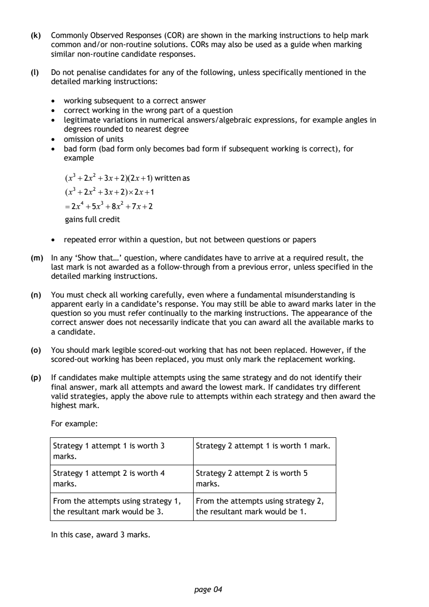
Selectable page text
(k) Commonly Observed Responses (COR) are shown in the marking instructions to help mark
common and/or non-routine solutions. CORs may also be used as a guide when marking
similar non-routine candidate responses.
(l) Do not penalise candidates for any of the following, unless specifically mentioned in the
detailed marking instructions:
• working subsequent to a correct answer
• correct working in the wrong part of a question
• legitimate variations in numerical answers/algebraic expressions, for example angles in
degrees rounded to nearest degree
• omission of units
• bad form (bad form only becomes bad form if subsequent working is correct), for
example
(x³ +2x² +3x+2)(2x+1) written as
(x³ +2x² +3x+2)×2x+1
=2x⁴ +5x³ +8x² +7x+2
gains full credit
• repeated error within a question, but not between questions or papers
(m) In any ‘Show that…’ question, where candidates have to arrive at a required result, the
last mark is not awarded as a follow-through from a previous error, unless specified in the
detailed marking instructions.
(n) You must check all working carefully, even where a fundamental misunderstanding is
apparent early in a candidate’s response. You may still be able to award marks later in the
question so you must refer continually to the marking instructions. The appearance of the
correct answer does not necessarily indicate that you can award all the available marks to
a candidate.
(o) You should mark legible scored-out working that has not been replaced. However, if the
scored-out working has been replaced, you must only mark the replacement working.
(p) If candidates make multiple attempts using the same strategy and do not identify their
final answer, mark all attempts and award the lowest mark. If candidates try different
valid strategies, apply the above rule to attempts within each strategy and then award the
highest mark.
For example:
Strategy 1 attempt 1 is worth 3 Strategy 2 attempt 1 is worth 1 mark.
marks.
Strategy 1 attempt 2 is worth 4 Strategy 2 attempt 2 is worth 5
marks. marks.
From the attempts using strategy 1, From the attempts using strategy 2,
the resultant mark would be 3. the resultant mark would be 1.
In this case, award 3 marks.
page 04PDF page 5
Paper 1, Question 1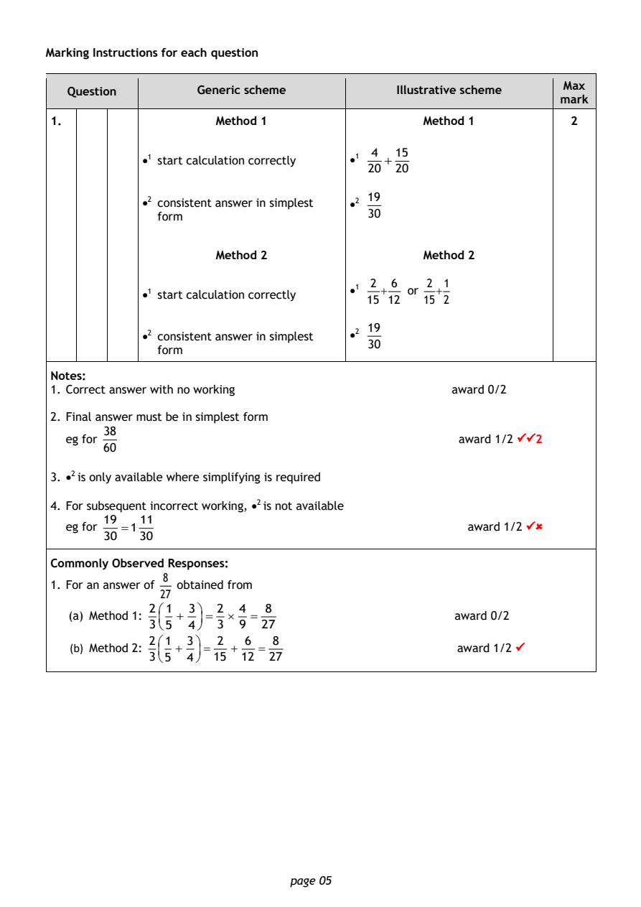
Selectable page text
Marking Instructions for each question
Max
Question Generic scheme Illustrative scheme
mark
1. Method 1 Method 1 2
4 15
•1 start calculation correctly •1 +
20 20
19
•2 consistent answer in simplest •2
form 30
Method 2 Method 2
2 6 2 1
•1 start calculation correctly •1 + or +
15 12 15 2
19
•2 consistent answer in simplest •2
30
form
N otes:
1. Correct answer with no working award 0/2
2. Final answer must be in simplest form
38
eg for award 1/2 ✓✓2
60
3. •² is only available where simplifying is required
4. For subsequent incorrect working, •² is not available
19 11
eg for =1 award 1/2 ✓
30 30
C ommonly Observed Responses:
8
1. For an answer of obtained from
27
21 3 2 4 8
(a) Method 1: + = × = award 0/2
35 4 3 9 27
21 3 2 6 8
(b) Method 2: + = + = award 1/2 ✓
35 4 15 12 27
page 05PDF page 6
Paper 1, Question 2Paper 1, Question 3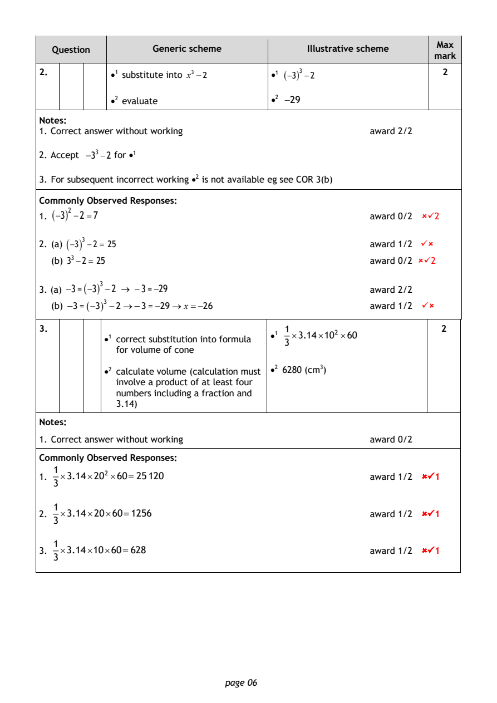
Selectable page text
Max
Question Generic scheme Illustrative scheme
mark
2. •1 substitute into x³−2 •1 (−3)³−2 2
•2 evaluate •2 −29
N otes:
1. Correct answer without working award 2/2
2. Accept −3³−2 for •¹
3. For subsequent incorrect working •² is not available eg see COR 3(b)
C ommonly Observed Responses:
1.
(−3)²−2=7
award 0/2 ✓2
2. (a) (−3)³−2= 25 award 1/2 ✓
(b) 3³−2= 25 award 0/2 ✓2
3. (a) −3=(−3)³−2 → −3=−29 award 2/2
(b) −3=(−3)³ −2→ −3=−29→ x=−26 award 1/2✓
3. 1 2
•1 correct substitution into formula
•1 ×3.14×10²×60
3
for volume of cone
•2 calculate volume (calculation must •² 6280 (cm³)
involve a product of at least four
numbers including a fraction and
3.14)
Notes:
1. Correct answer without working award 0/2
Commonly Observed Responses:
1
1. ×3.14×20²×60= 25120 award 1/2✓1
3
1
2. ×3.14×20×60=1256 award 1/2✓1
3
1
3. ×3.14×10×60=628 award 1/2✓1
3
page 06PDF page 7
Paper 1, Question 4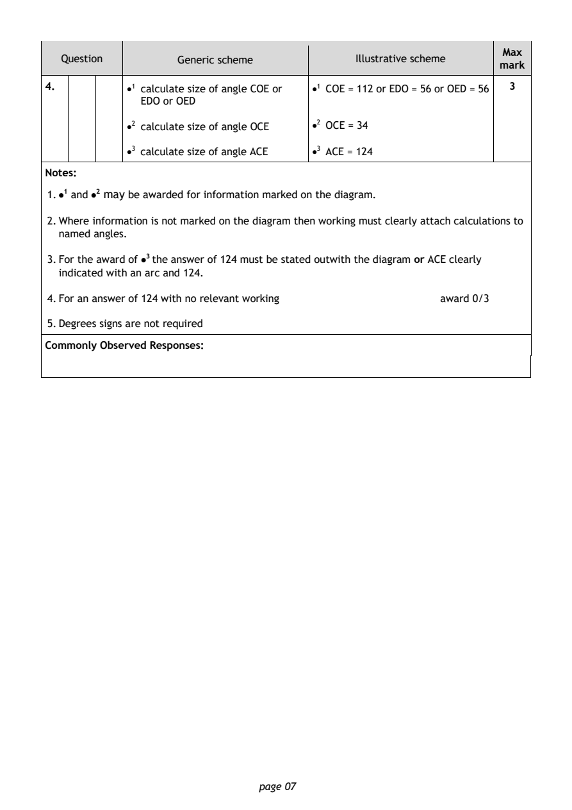
Selectable page text
Max
Question Generic scheme Illustrative scheme
mark
4. •1 calculate size of angle COE or •1 COE = 112 or EDO = 56 or OED = 56 3
EDO or OED
•2 calculate size of angle OCE •2 OCE = 34
•3 calculate size of angle ACE •3 ACE = 124
Notes:
1. •¹ and •² may be awarded for information marked on the diagram.
2. Where information is not marked on the diagram then working must clearly attach calculations to
named angles.
3. For the award of •³ the answer of 124 must be stated outwith the diagram or ACE clearly
indicated with an arc and 124.
4. For an answer of 124 with no relevant working award 0/3
5. Degrees signs are not required
Commonly Observed Responses:
page 07PDF page 8
Paper 1, Question 5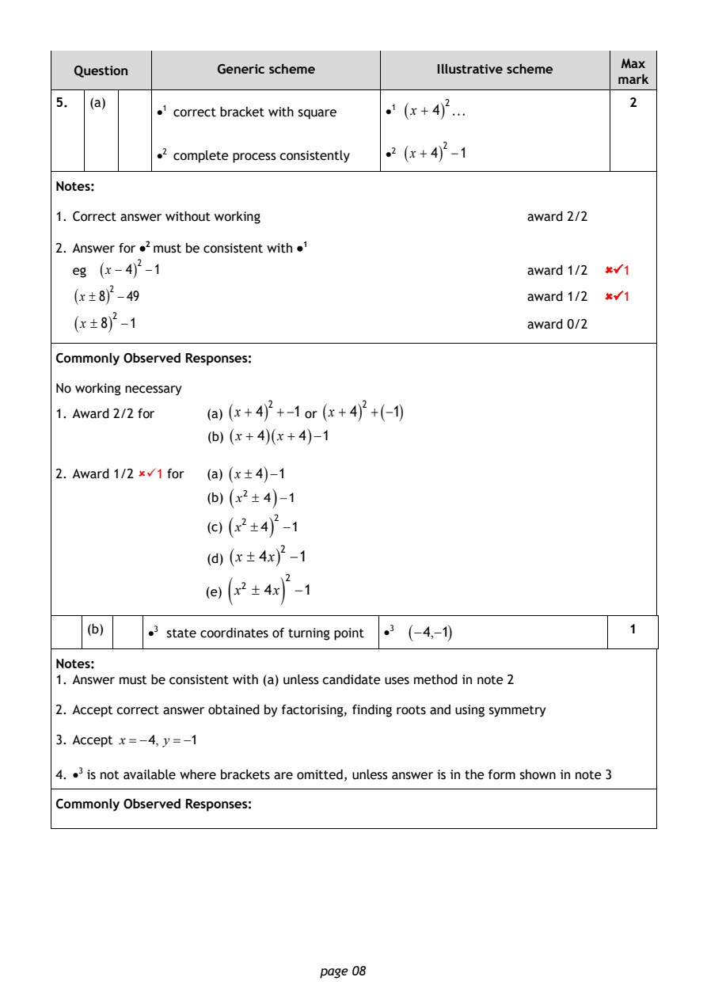
Selectable page text
Max
Question Generic scheme Illustrative scheme
mark
5. (a) 2
•1 correct bracket with square •1 (x + 4)²
•2 complete process consistently •2 (x + 4)² −1
Notes:
1. Correct answer without working award 2/2
2. Answer for •² must be consistent with •¹
eg (x − 4)² −1 award 1/2 ✓1
(x ±8)²−49 award 1/2 ✓1
(x ± 8)² −1 award 0/2
Commonly Observed Responses:
N o working necessary
1. Award 2/2 for (a) (x + 4)² +−1 or (x + 4)² +(−1)
(b) (x + 4)(x + 4)−1
2. Award 1/2 ✓1 for (a) (x ± 4)−1
( )
(b) x² ± 4 −1
( )
(c) x² ±4 ² −1
(d) (x ± 4x)² −1
( )
(e) x² ± 4x ² −1
(b) •3 state coordinates of turning point •3 (−4,−1) 1
N otes:
1. Answer must be consistent with (a) unless candidate uses method in note 2
2. Accept correct answer obtained by factorising, finding roots and using symmetry
3. Accept x=−4, y=−1
4. •³ is not available where brackets are omitted, unless answer is in the form shown in note 3
Commonly Observed Responses:
page 08PDF page 9
Paper 1, Question 6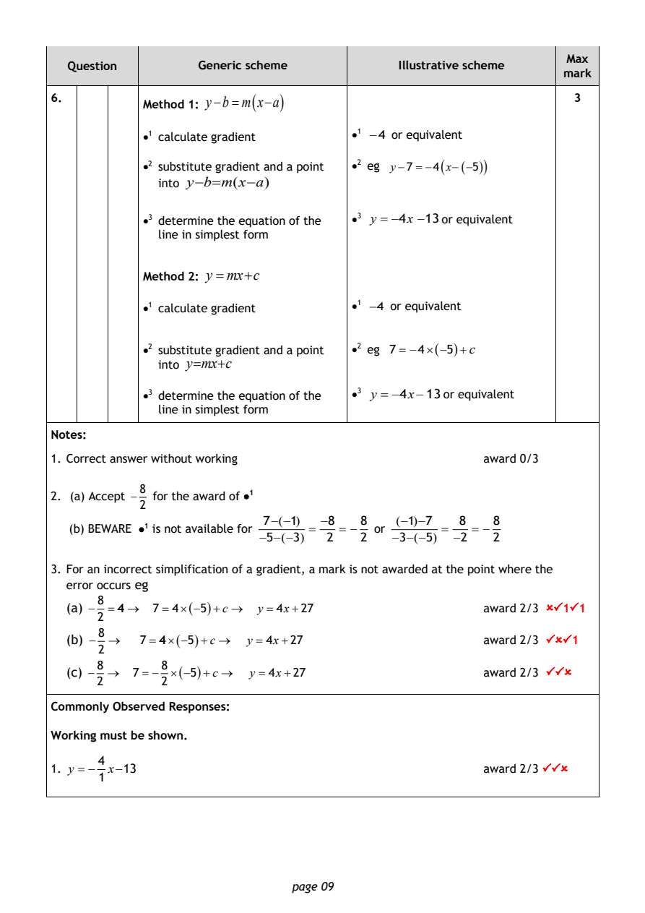
Selectable page text
Max
Question Generic scheme Illustrative scheme
mark
6. y−b=m(x−a) 3
Method 1:
•1 calculate gradient •1 −4 or equivalent
•2 substitute gradient and a point •2 eg y−7=−4 ( x−(−5))
into y−b=m(x−a)
•3 determine the equation of the •3 y = −4x −13or equivalent
line in simplest form
Method 2: y =mx+c
•1 calculate gradient •1 −4 or equivalent
•2 substit and a point •2 eg 7= −4×(−5)+c
into y=^{u}^{t}m^{e}x^{g}+^{r}c^{a}^{d} ⁱ^{e}ⁿ^{t}
•3 determine the equation of the •3 y = −4x−13or equivalent
line in simplest form
Notes:
1. Correct answer without working award 0/3
8
2. (a) Accept − for the award of •¹
2
7−(−1) −8 8 (−1)−7 8 8
(b) BEWARE •¹ is not available for = = − or = = −
−5−(−3) 2 2 −3−(−5) −2 2
3. For an incorrect simplification of a gradient, a mark is not awarded at the point where the
error occurs eg
8
(a) − =4→ 7=4×(−5)+c→ y = 4x+27 award 2/3 11
2
8
(b) − → 7=4×(−5)+c→ y =4x+27 award 2/3 1
2
8 8
(c) − → 7=− ×(−5)+c→ y =4x+27 award 2/3
2 2
Commonly Observed Responses:
Working must be shown.
4
1. y = − x−13 award 2/3
1
page 09PDF page 10
Paper 1, Question 7Paper 1, Question 8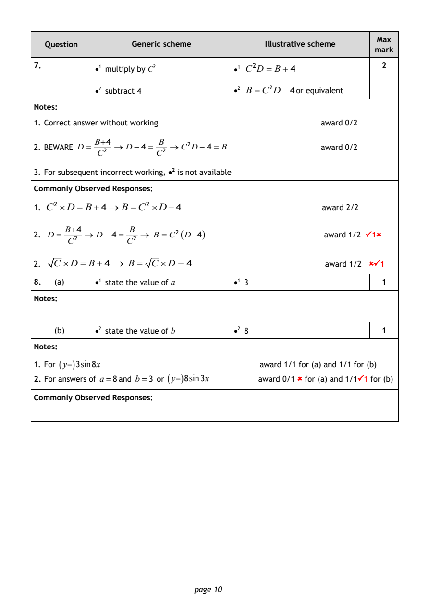
Selectable page text
Max
Question Generic scheme Illustrative scheme
mark
7. 2
•1 multiply by C² •1 C²D = B + 4
•2 subtract 4 •2 B =C²D−4or equivalent
Notes:
1. Correct answer without working award 0/2
B+4 B
2. BEWARE D = → D−4 = →C²D−4 = B award 0/2
C² C²
3. For subsequent incorrect working, •² is not available
Commonly Observed Responses:
1. C²×D = B+4 → B =C²×D−4 award 2/2
B+4 B
2. D = → D−4 = → B =C²(D−4) award 1/2 1
C² C²
2. C ×D = B+4 → B = C ×D − 4 award 1/2 1
8. (a) •1 state the value of a •1 3 1
Notes:
(b) •2 state the value of b •2 8 1
Notes:
1. For (y=)3sin8x award 1/1 for (a) and 1/1 for (b)
2. For answers of a=8and b=3 or (y=)8sin3x award 0/1 for (a) and 1/1✓1 for (b)
Commonly Observed Responses:
page 10PDF page 11
Paper 1, Question 9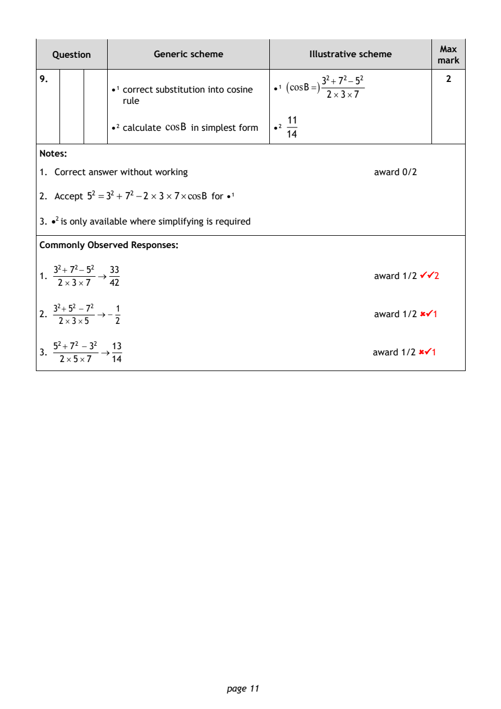
Selectable page text
Max
Question Generic scheme Illustrative scheme
mark
9. 3²+7²−5² 2
•¹ correct substitution into cosine •¹
(cosB=)
2×3×7
rule
11
•² calculate cosB in simplest form •²
14
Notes:
1. Correct answer without working award 0/2
2. Accept 5² =3²+ 7²−2×3×7×cosB for •¹
3. •² is only available where simplifying is required
Commonly Observed Responses:
3²+ 7²−5² 33
1. → award 1/2 ✓✓2
2×3×7 42
3²+5² −7² 1
2. →− award 1/2 ✓1
2×3×5 2
5²+7² −3² 13
3. → award 1/2 ✓1
2×5×7 14
page 11PDF page 12
Paper 1, Question 10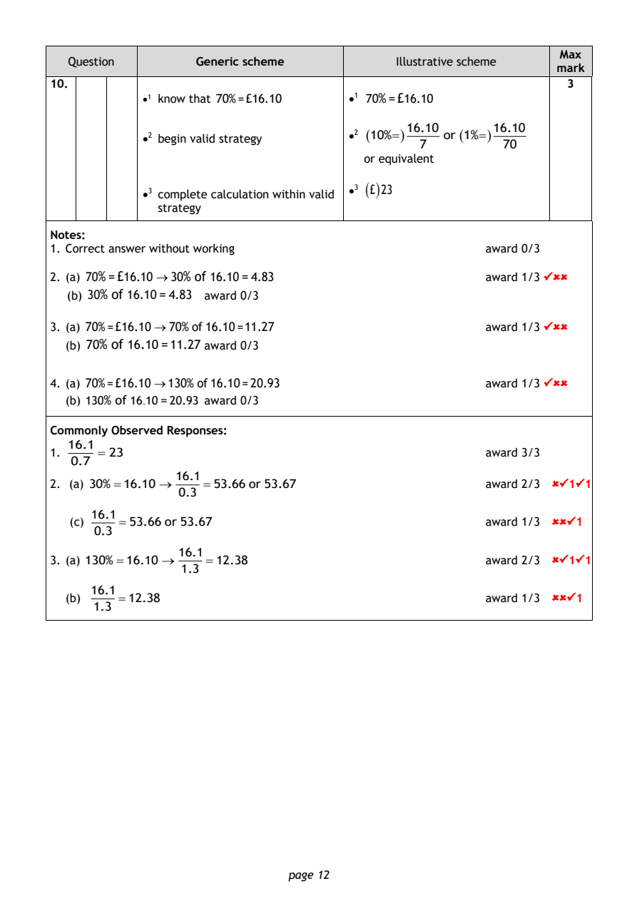
Selectable page text
Max
Question Generic scheme Illustrative scheme
mark
10. 3
•1 know that 70%=£16.10 •1 70%=£16.10
16.10 16.10
•2 begin valid strategy •2 (10%=) or (1%=)
7 70
or equivalent
•3 complete calculation within valid •3
(£)23
strategy
N otes:
1. Correct answer without working award 0/3
2. (a) 70%=£16.10 →30% of 16.10=4.83 award 1/3 ✓
(b) 30% of 16.10=4.83 award 0/3
3. (a) 70%=£16.10 →70%of16.10=11.27 award 1/3 ✓
(b) 70% of 16.10=11.27 award 0/3
4. (a) 70%=£16.10 →130%of16.10=20.93 award 1/3 ✓
(b) 130% of 16.10=20.93 award 0/3
C ommonly Observed Responses:
16.1
1. = 23 award 3/3
0.7
16.1
2. (a) 30% =16.10 → =53.66or 53.67 award 2/3✓1✓1
0.3
16.1
(c) =53.66or 53.67 award 1/3✓1
0.3
16.1
3. (a) 130% =16.10 → =12.38 award 2/3✓1✓1
1.3
16.1
(b) =12.38 award 1/3✓1
1.3
page 12PDF page 13
Paper 1, Question 11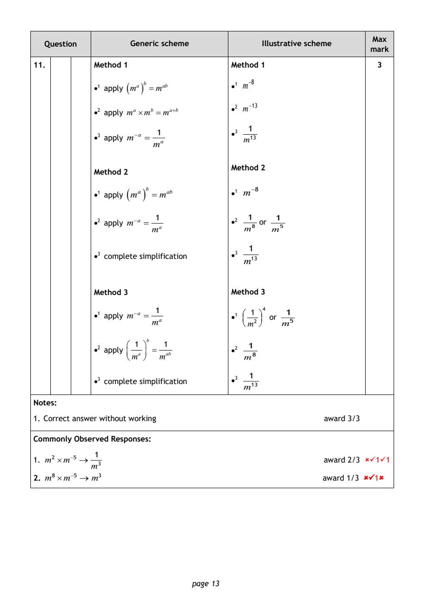
Selectable page text
Max
Question Generic scheme Illustrative scheme
mark
11. Method 1 Method 1 3
•1 apply ( m^{a} ) ^{b} =m^{a}^{b} •1 m⁻⁸
•2 m⁻¹³
•2 apply m^{a} ×m^{b} =m^{a}⁺^{b}
1
1 •3
•3 apply m⁻^{a} = m¹³
m^{a}
Method 2
Method 2
•1 apply ( m^{a} ) ^{b} = m^{a}^{b} •1 m⁻⁸
1 1 1
•2 apply m⁻^{a} = •2 or
m^{a} m⁸ m⁵
1
•3 complete simplification •3
m¹³
Method 3 Method 3
•1 apply m⁻^{a} = 1 •1 1 ⁴ or 1
m^{a} m² m⁵
1 ^{b} 1 1
•2 apply = •2
m^{a} m^{a}^{b} m⁸
1
•3 complete simplification •3
m¹³
Notes:
1. Correct answer without working award 3/3
Commonly Observed Responses:
1
1. m²×m⁻⁵ → award 2/3 ✓1✓1
m³
2. m⁸×m⁻⁵ → m³ award 1/3 ✓1
page 13PDF page 14
Paper 1, Question 12Paper 1, Question 13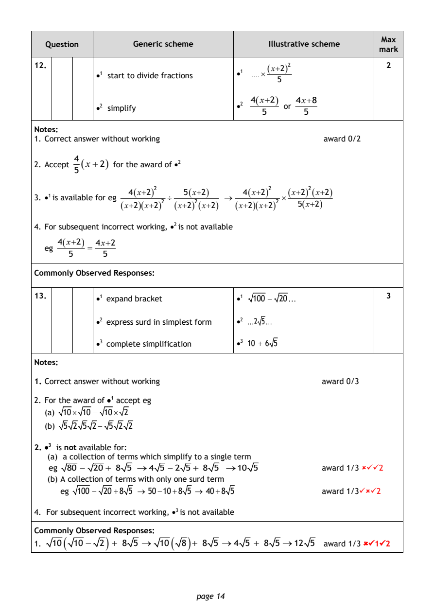
Selectable page text
Max
Question Generic scheme Illustrative scheme
mark
12. (x+2)² 2
•1 start to divide fractions •1 ....×
5
4(x+2) 4x+8
•2 simplify •2 or
5 5
N otes:
1. Correct answer without working award 0/2
4
2. Accept
(x+2)
for the award of •²
5
4(x+2)² 5(x+2) 4(x+2)² (x+2)²(x+2)
3. •¹ is available for eg ÷ → ×
(x+2)(x+2)² (x+2)²(x+2) (x+2)(x+2)² 5(x+2)
4. For subsequent incorrect working, •² is not available
4(x+2) 4x+2
eg =
5 5
Commonly Observed Responses:
13. •1 expand bracket •1 100 − 20 3
•2 express surd in simplest form •2 2 5
•3 complete simplification •3 10 + 6 5
Notes:
1. Correct answer without working award 0/3
2. For the award of •¹ accept eg
(a) 10× 10 − 10× 2
(b) 5 2 5 2− 5 2 2
2. •³ is not available for:
(a) a collection of terms which simplify to a single term
eg 80 − 20 + 8 5 →4 5 − 2 5 + 8 5 →10 5 award 1/3 ✓✓2
(b) A collection of terms with only one surd term
eg 100 − 20+8 5 → 50−10+8 5 → 40+8 5 award 1/3✓✓2
4. For subsequent incorrect working, •³ is not available
C ommonly Observed Responses:
( ) ( )
1. 10 10 − 2 + 8 5 → 10 8 + 8 5 → 4 5 + 8 5 →12 5 award 1/3 ✓1✓2
page 14PDF page 15
Paper 1, Question 14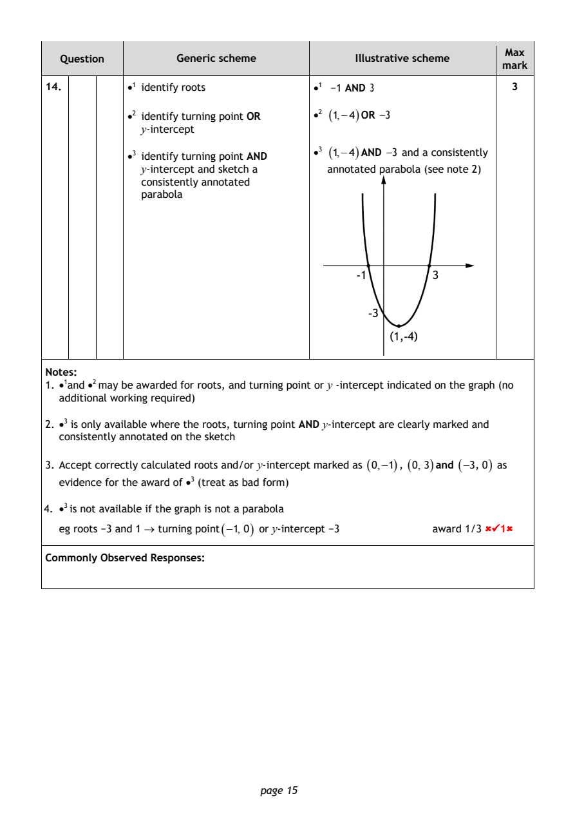
Selectable page text
Max
Question Generic scheme Illustrative scheme
mark
14. •1 identify roots •1 −1 AND 3 3
•2 identify turning point OR •2 (1,−4)OR −3
y-intercept
•3 identify turning point AND •3 (1,−4)AND −3 and a consistently
y-intercept and sketch a annotated parabola (see note 2)
consistently annotated
parabola
Notes:
1. •¹and •² may be awarded for roots, and turning point or y -intercept indicated on the graph (no
additional working required)
2. •³ is only available where the roots, turning point AND y-intercept are clearly marked and
consistently annotated on the sketch
3. Accept correctly calculated roots and/or y-intercept marked as (0,−1), (0, 3)and (−3,0) as
evidence for the award of •³ (treat as bad form)
4. •³ is not available if the graph is not a parabola
eg roots −3 and 1 → turning point(−1, 0) or y-intercept −3 award 1/3 ✓1
Commonly Observed Responses:
page 15PDF page 16
Paper 1, Question 15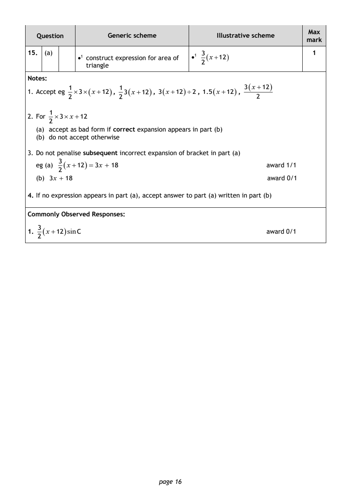
Selectable page text
Max
Question Generic scheme Illustrative scheme
mark
15. (a) 3 1
•1 construct expression for area of •1 (x+12)
2
triangle
Notes:
1 1
3(x+12)
1. Accept eg ×3×(x+12), 3(x+12), 3(x+12)÷2, 1.5(x+12),
2 2 2
1
2. For ×3×x+12
2
(a) accept as bad form if correct expansion appears in part (b)
(b) do not accept otherwise
3. Do not penalise subsequent incorrect expansion of bracket in part (a)
3
eg (a) (x+12)=3x + 18 award 1/1
2
(b) 3x + 18 award 0/1
4. If no expression appears in part (a), accept answer to part (a) written in part (b)
Commonly Observed Responses:
3
1. (x+12)sinC award 0/1
2
page 16PDF page 17
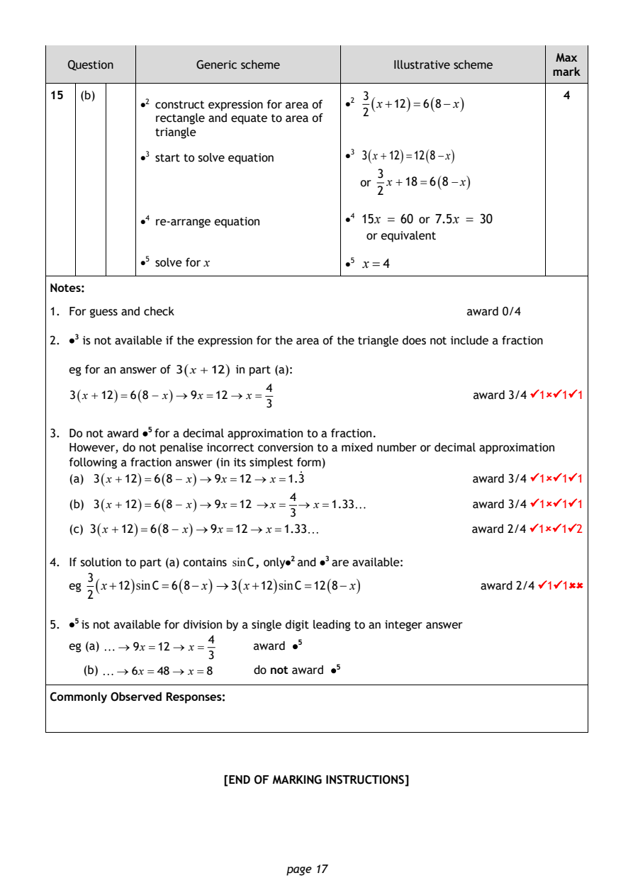
Selectable page text
Max
Question Generic scheme Illustrative scheme
mark
1 5 (b)
•2 construct expression for area of •2
3
(x+12)=6(8−x)
4
2
rectangle and equate to area of
triangle
•3 start to solve equation •3 3(x+12)=12(8−x)
3
or x +18=6(8 −x)
2
•4 re-arrange equation •4 15x = 60 or 7.5x = 30
or equivalent
•5 solve for x •5 x =4
Notes:
1. For guess and check award 0/4
2. •³ is not available if the expression for the area of the triangle does not include a fraction
eg for an answer of 3(x +12) in part (a):
4
3(x +12)=6(8 − x)→9x =12→ x = award 3/4 ✓1✓1✓1
3
3. Do not award •⁵ for a decimal approximation to a fraction.
However, do not penalise incorrect conversion to a mixed number or decimal approximation
following a fraction answer (in its simplest form)
(a) 3(x +12)=6(8− x)→9x =12→ x =1.3 award 3/4 ✓1✓1✓1
4
(b) 3(x +12)=6(8− x)→9x =12 →x = → x =1.33 award 3/4 ✓1✓1✓1
3
(c) 3(x +12)=6(8− x)→9x =12→ x=1.33 award 2/4 ✓1✓1✓2
4. If solution to part (a) contains sinC, only•² and •³ are available:
3
eg
(x+12)sinC=6(8−x) →3(x+12)sinC=12(8−x)
award 2/4 ✓1✓1
2
5. •⁵ is not available for division by a single digit leading to an integer answer
4
eg (a) →9x =12→ x = award •⁵
3
(b) →6x =48→ x =8 do not award •⁵
Commonly Observed Responses:
[END OF MARKING INSTRUCTIONS]
page 17